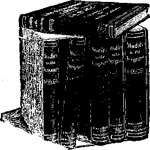

WATCH TOWER BIBLE & TRACT SOCIETY
310 Martin Bldg., Federal St. PITTSBURGH
PA.
R No. 12
"It shall come to pass in the last days, that the mountain of the Lord’s house shall be established in the top of the mountains, and shall be exalted above the hills; and all nations shall flow unto it.”—Isaiah 2 :2.
OUR text has not yet been fulfilled, but we believe the beginning of its fulfillment to be near. It pictures Messiah’s kingdom, for which Christian people have long been waiting and praying, “Thy kingdom come; thy will be done on earth as it is in heaven”—the same kingdom for which the Jews so long waited and are still waiting. Our text relates, not to the spiritual part of the kingdom, which the Gospel church is called to share, but to the earthly part of the kingdom, which belongs to the natural seed of Abraham. A great mistake has been made by many of us in the past, in that we have not discerned and acknowledged the two Israels, spiritual and natural, and the separate rewards and blessings apportioned to these by the divine promises of the Scriptures. Both are to -be used of God in fulfilling the promise made to Abraham—in blessing all the families of the earth.
Earthly Representative of the Kingdom
After the completion of Messiah, Head and members, on the plane of glory, the New Covenant will be inaugurated with Israel, as the Scriptures distinctly teach. (Jeremiah 31 131-34) Our text, therefore, waits for its accomplishment until the last member of the elect' church, of Christ shall have passed beyond the veil.
In the symbolic language of the Scriptures a mountain is always symbolical of a kingdom. Hence the mountain of the Lord’s house means the kingdom of God and that royal house or family recognized by him. For instance, we read that David sat upon the throne of the kingdom of the Lord and that God made a covenant with him, “even the sure mercies of David”; namely that none but his seed, his posterity, would ever be recognized as the divinely appointed representatives of God in, kingly authority and power. In other words, Messiah was to be the offspring of David, the great antitypical David (Beloved), who must “reign from sea to sea and from the river to the ends of the earth.”
The Messiah King on the spirit plane, the Son of God (and like God invisible to men, as are also the angels), is the antitypical David and the antitypical Solomon, the wise, the great, the rich. In the days of his flesh our Lord was the Soh of David according to the flesh, though begotten of a divine life, not tainted by any human imperfection. He was, therefore, holy, harmless, undefiled and separate from sinners. His faithfulness to the will of the Father made him subject to all the experiences of suffering and death, as expressed in his own words, “The cup which my Father hath poured for me, shall I refuse to drink it?” His obedience unto death, even the death of the cross, demonstrated his loyalty to the last degree and he received the high reward appropriate. “Him hath God also highly exalted and given a name that is above every name, that at the name of Jesus every knee should bow, both of things in heaven and things in earth.”
Exalted to the right hand of divine favor he waits only for the Father’s time to take to himself his great power and reign. (Revelation n :i7) Meantime, in harmony with the divine will, purposed before the foundation of the world, he acts as Advocate for such as have the hearing ear and the obedient heart and will now respond to the special invitation of the Gospel age. This call is to leave the world, its sins, its pleasures
and its hopes, and to walk by faith in the exceeding great and precious promises of God— the things which eye hath not seen nor ear heard, neither hath entered into the heart of man. These are the heavenly things promised them as the bride and joint-heir with their Redeemer in his glorious kingdom to come and its blessed work of uplifting' Israel and the world.
“In the Top of the Mountains”
We have before our minds the antitypical house of David, Messiah’s kingly household, the royal priesthood, divinely prepared. As a kingdom it will be at the top—above all -the kingdoms of earth. Not only will this be true of the spiritual kingdom, invisible to men as the angels are invisible; but it will include also an earthly kingdom composed of ‘‘Israelites indeed.” At their head, as princes in all the earth, will stand the resurrected ancient worthies, perfected as men and samples of what all mankind, by obedience to the laws of the kingdom, may attain to, with eternal life. These ancient worthies are enumerated in the Scriptures—Abraham, Isaac, Jacob, the prophets, etc., described by St. Paul in Hebrews 11:38-40. To these belong the earthly promises of the Old Testament. They never heard of the heavenly or spiritual promises. Their loyalty will find its reward in the fact that they will come forth from the tomb no longer blemished and imperfect, but fully, completely restored to the perfection originally enjoyed by father Adam. Additionally these will have the special guidance and instruction of Messiah (Head and members) in all the affairs of mankind. Thus as the Master said, speaking of that time, “Ye shall see Abraham, Isaac, Jacob and the prophets in the kingdom.”—Luke 13 ‘.28.
God’s kingdom will be represented in jthe earth by Israel—'especially by these saintly men of Israel, resurrected perfect, who will be the special appointees and representatives of the glorified Messiah’s rule. As it is written, “Instead of thy fathers Ithe ancient saintlv ones were stvled
THE DAWN OF A NEW ERA 5 the fathers, even as Jesus was styled the Son of Abraham and David] shall be thy children, whom thou maycst make princes in all the earth.” (Psalm 45:16.) These princes, acting under and continually in contact with the spiritual kingdom and rulers styled in the Scriptures ‘'the royal priesthood,” will, of course, be so superior in their wisdom and power as to command the obedience of the whole earth. The nation of Israel, with whom they are related, would naturally respond more quickly than others to the new order of things, which will be just that for which they have been waiting and praying for more than thirty centuries.
“All Nations Shall Flow Unto It”
In these words the Lord through the prophet assures us of the wonderful success which will attend the establishment of the new empire of earth, the dominion of the Prince of Light, which will supersede the dominion of the Prince of Darkness, when Satan shall be bound for a thousand years, that he may deceive the peoples no more. Messiah’s kingdom will be high above all other kingdoms, not only in its grandeur, majesty and authority, but also in the lofty principles which it will represent.
Thus it is written; “He shall lay righteousness to the line and justice to the plummet and the hail [truth] shall sweep away the refuge of lies.” (Isaiah 28 :i7). Nevertheless, as the world shall come to appreciate the new order of things all nations shall flow unto it, flow up to it—contrary to the downwardness of fallen human nature. It will make manifest such wonderful rewards for righteousness and obedience to God, and it will so make manifest the stripes that must attend all wilful disobedience to the divine arrangement, that the Scripture will be fulfilled which declares that when the judgments of the Lord are abroad in the earth, the inhabitants of the world will learn righteousness.— Isaiah 26:9.
Humanity for six thousand years has been
learning “the exceeding sinfulness of sin,” its downward tendency in every sense of the word. Every form of government has ben tried in an endeavor to secure the greatest amount of blessing. But the uniform results have been that those exalted to place and influence and power have proved themselves unequal to the opportunities and temptations of the positions and have abused them selfishly. Whoever is acquainted with history realizes the truthfulness of all this. If some of us have hoped that the general enlightenment of the race would abolish sin and selfishness and demonstrate the truthfulness of the proverb, “Honesty Is the best policy,” we are willing to confess that this has been a mistake. We perceive that the greater the wisdom and intelligence granted to a selfish mind and heart the greater will be its opportunities for evil and incitement thereto.
“The Desire of All Nations”
God will soon manifest his kingdom in the top of the mountains—higher than all other kingdoms every way, and all people shall flow toward it. As it is written, “The desire of all peoples shall come.”—Haggai 2:7.
This is described in the verses following our text which read, “And many people shall go and say, Come ye, let us go up to the mountain [kingdom] of the Lord, to the house [temple] of the God of Jacob; and he will teach us of his ways and we will walk in his paths, for out of Zion [the spiritual unseen kingdom of Messiah] shall go forth the law and the Word of the Lord from Jerusalem [the seat of earth’s empire to be]. And he shall judge among the nations [rewarding and punishing justly], and shall rebuke many people; and they shall beat their swords into plowshares and their spears into pruning hooks. Nation shall not lift up sword against nation, neither shall they learn war any more.” All Christians agree that these words apply to the Messiah’s kingdom. They tell us clearly and distinctly of how the judgments of the Lord will be abroad in the earth, causing wars to cease and the knowledge of the Lord to fill the whole earth as the waters cover the great deep.— Isaiah 11:9.
We have already noted that this prophecy belongs to natural Israel and not to spiritual Israel. As the first verse declares, it concerns Judah and Jerusalem. By the time this prophecy shall have begun to be fulfilled, spiritual Israel will be beyond the veil. It is in full harmony with this that we read in the fifth verse, “O house of Jacob, Come ye and let us walk in the light of the Lord 1”
This is particularly the time when this wonderful message to natural Israel should go forth. We understand the Scriptures to teach that during the next few years the Lord will have special dealings with Israel in connection with this call. He will point out to them the way of righteousness and the great privileges that are theirs as a people, because of divine promises to their fathers, Abraham, Isaac and Jacob, etc. But only those who respond by turning to the light of God’s Word to walk in it will be in the proper condition of heart and obedience to promptly get the blessing at the beginning of Messiah’s reign. Those most prompt to respond will get the greater blessing.
Six Great Days of Evi!
Verses 6-10 portray some of the reasons why God’s favor has been withdrawn for a time from natural Israel—aside from the fact that his special favor was for the time to be given to spiritual Israel. Then follows a description of the time of trouble, in which present institutions will succumb, to be followed by Messiah’s empire.
We call attention to the six great days of a thousand years each, during which the world is experiencing a reign of sin and death, sighing and crying. Physicians physical and moral have been unable to effect a cure. God himself alone is able to roll away the curse which he imposed and to give mankind instead his blessing.
In the past we have been so intent on following our own sectarian schemes and theories that we have neglected the proper study of the Bible. Indeed, not until our day has such a study been possible for the masses. Only now do they have the Word of God in their possession in convenient form in every family, and only now is education so general as to permit all to read, all to study, all to know the good things of the divine promises.
The creeds of the dark ages did indeed din into our ears the message of the curse. Yea, they distorted it and made it a message of eternal torture, whereas the Scriptures declare that “the wages of sin is death”—not eternal torment. In our darkness we mistranslated and misinterpreted God’s Word to our own confusion, swallowing also some interpolations without proper scrutiny. No wonder we were nauseated by those creeds! No wonder the intelligent portion of humanity were in danger of all being driven into infidelity —away from God and from his Book, which we misunderstood and misrepresented!
A New Day Is Dawning
Bible students are arousing from their sleep and finding that they have long suffered from nocturnal hallucinations. The true message of God’s Word is spreading, and with it goes increase of faith, together with joy, peace and godliness.
We have all noted the fact that ours is the most wonderful day of earth’s history. Our eyes open widely as we note the contrast between the blessings which surround us and those enjoyed by our fathers. We are surely all amazed at what we see of progress, invention and laborsaving machinery, of educational arrangements, of improvement in the breeding of cattle, sheep, swine/horses, poultry, etc.
We are equally astonished at the progress made in the culture of fruit and vegetables. We cogitate further, that with the progress of invention, the necessity of arduous labor and sweat of face for the-daily bread will soon be at an end,
and the necessary leisure and conveniences and comforts which will permit every man to be a nobleman will soon be available to all. What do these things mean? Why have they come suddenly upon us in one generation?—yea, and give no indication of slackening, but rather of progressing to still greater wonders ! What is the explanation of this?
The Bible Answers Our Query
The Bible alone gives the reply to this query. It explains to us the meaning of the reign of sin and death which we and our forefathers have shared. It tells us that our sorrows, aches and pains, weaknesses, mental, moral and physical, are all the results of sin—the sin of father Adam entailed upon us by the laws of heredity for the six great days of a thousand years each, already past.
Then to our astonishment the Bible- opens the door of the future and bids us look abroad and see the better day which God promises. It explains that he has been giving us lessons respecting the exceeding sinfulness of sin, but that all the while he has sympathized with and loved his creatures. It tells us that as a beginning of the divine intention to roll away the curse and to give instead divine blessings, Jesus came into the world and died for Adam and his race, “the just for the unjust,” to cancel their judicial obligations —the death penalty upon them—and thus to give them an opportunity in God’s due time to return to their former estate, all that Adam lost—to the perfection which was his when he was in the image of God, to all that was his in his glorious estate—Paradise.
When Will the Curse Roll Away?
Chronologically we arc already in the great seventh day or thousand-year Sabbath—we are already forty-seven years into the great seventh day. This explains the blessings which are ours and which are coming to us increasingly. This progress will continue throughout the great thousand-year Sabbath of Messiah’s kingdom. The Bible promises that it shall bring blessings to every creature—not only the living, but the dead, ‘‘for all that are in their graves must hear the voice of the Son of God, and come forth.” (John 5128, 29) All must be given a full opportunity to come into harmony with the Creator and to come to perfection and everlasting life. Only by personal, wilful, intelligent sin can anyone’s blessings bo turned into the second curse of God, the second death, from which there will be no redemption.
Incidentally let us note that the coming of those blessings is, in one sense, premature, in that they have come to us before the establishment of the Messianic kingdom. Consequently, instead of the world’s being happier because of these favors, it is more unhappy, more discontented than ever.
The permission of the light and blessings of our day, in advance of Messiah’s rule, the Creator intends, shall teach humanity a great lesson respecting their own fallen condition and respecting their need of the very help which God is providing in Christ. None shall have the opportunity of erroneously supposing that God’s blessings, coming to the unregenerate hearts, will make them thankful and happy. The new heart is necessary to real happiness.
Truth Discerned Aids Faith
As we gradually come to realize that we are living in the dawning of the time for the long-promised blessing, this Sabbath day of earth, when the curse shall roll away, it gives us a fresh interest in all the affairs of the present life, as well as in those features of the divine plan which are yet future! The knowledge makes life worth living. Millions of people live a treadmill existence, unworthy of themselves and joyless, be cause they have not come into the family of God and not been taught to understand the deep things of his gracious purposes.
The first step necessary is an acknowledgment of the Creator and a consecration of life to him, and then an application of our hearts to know
his will, that we may do it. One day of such living is worth more than a year of the aimless meandering common to the masses. All who have entered into this blessing should rejoice therein. All who have not, should seek the Door, Christ, and be glad to walk the narrow way, following his footsteps into grace and peace divine.
Stiff-necked and Stiff-kneed
We may, indeed, rejoice in the lessening of the sweat of face coming to mankind—in the dawning of this new day. We may, indeed, rejoice in the greater spread of knowledge to every class. We may, indeed, rejoice in the more comfortable housing, feeding and clothing of our race. Wc may, indeed, praise, the day -which is ushering in these blessings and which, through irrigation canals and artesian wells, scientific study and teachers, books and newspapers, is making the wilderness to blossom as the rose and many blades of grass to grow where one alone grew previously, bringing increased fruitfulness. But still much is to be desired—much that we cannot accomplish for ourselves. We need an outside influence, an outside power—the very one which God’s Word declares is about to take control—Messiah’s kingdom.
Our blessings thus far are not drawing the masses nearer to God—not making them more thankful, more holy, more reverential, more loving. On the contrary, we are becoming more strifeful, more self-willed, than any previous generation—less inclined as a world than ever before to worship and reverence the God of all grace— less inclined to believe that there is such a being at all. At the present rate of growth of irreverence it would seem as though the time might soon come when no knee would bow and no tongue confess to God’s glory.
“As I Live, Salth the Lord”
But here we look to God to see what provision he has made for present conditions. And as we look our hearts are cheered. We have the divinely solemn declaration that the full end of the
reign of sin and death is to come. And we have outlined in God’s Word proofs that we are now living in the time when that new reign of righteousness shall be inaugurated. We have prayed for it with more or less of faith all our lives: “Thy kingdom come; thy will be done on earth, even as it is done in heaven.”
Permit not faith to let go her hold; the Word of God cannot fail. As he is bringing to us the temporal blessings promised in his Word and appropriate to this time—the new dispensation—let us trust him for every other feature of his promised blessing. He who has begun the good work iS able to complete it. If he has promised, and sworn to this promise, that all the families of the earth shall be blessed in Abraham’s seed, surely we may rely upon it. If we see at present only the spiritual seed of Abraham in full harmony with God through Christ, and they not glorified, let us wait patiently for the Lord, knowing that he will fulfil his promises in due time. '
The church, the elect, are indeed the spiritual seed of Abraham. This class, as the bride of Christ, must be completed and must be united to their Redeemer by the change of the first resurrection before they will be qualified to share with him the great work of blessing the natural seed of Abraham.—Galatians 3 :8, 16, 29.
The completion and glorification of the church will mark the time for the establishment of the Messianic kingdom. Then will begin the pouring out of the divine blessing and the removal of the curse. Satan will be bound for a thousand years. The knowledge of God will gradually fill the whole earth. The natural seed of Abraham will be the first to receive the restitution blessings, to return to the image and likeness of God in the flesh,, and to have returned to them paradise conditions and divine favor. The ancient saintly ones of the Jewish race, we are assured, shall be made princes in all the earth for the correction of their brethren, natural Israel.
THE DAWN OF A NEW ERA 13 and for the instruction and assistance of the people of every nation, kindred and tongue—the living and the dead.
Paradise Restored
Rapidly the knowledge of the glory of God will fill the whole earth. Corrections in righteousness will be meted out to all not doing their very best to come into harmony with the divine law. Blessed rewards of increasing perfection of mind and body will gradually come to the willing and obedient in that day. The wilful evil-doers shall be cut off in the second death. Then, as a result, before the thousand years of Messiah’s kingdom shall expire, every knee shall bow, to the glory of God.
Meantime, also, the blessings of paradise will be coming to the earth as a whole. God will make the place of his feet glorious. (Isaiah 60:13; 66:1) Jesus will see of the travail of his soul and be satisfied. (Isaiah 53:10, 11) All those who have suffered for righteousness’ sake during the reign of sin and death, will be more than compensated therefor in the blessings and joys of the new dispensation. The knowledge of the glory of God shall fill the whole earth. The glorious divine character will be made manifest, not only to angels, but to men. The infinitude of God’s love, justice, wisdom and power may then be seen by all; whereas today, under the reign of sin and death, with minds beclouded by the errors instilled by the prince of darkness, the opposite condition—darkness— covers the earth, and gross darkness the heathen.
What a glorious consummation is before us I What lengths and breadths of human possibility in perfection we see with the eye of faith! Man was made in the image and likeness of his Creator, and the earth was provided to be his everlasting home. The curse that has rested upon the earth and its king has brought both to angels and to men valuable lessons, which perhaps could not have been learned under any other process.
The result will be glorious, as described by the Master himself. There shall be no more sighing, no more curse there, nor sorrow nor pain nor any more dying; for all the things of sin and death will have passed away. He who sits upon the throne will make all things new.— Revelation 21 -.4, 5.
The Prophet Isaiah declares that Jehovah will do these things, and that every knee shall bow to him and every tongue confess. (Isaiah 45:23) St. Paul applies this Scripture, and declares that it will be fulfilled through Jesus, and incidentally it will be fulfilled by the church through Jesus. The thought is that in acknowledging Christ and the church and in bowing to them the world will be bowing to Jehovah; for the Logos, Jesus, the Reedeemer, forever will be the Representative of the Father and his power. Hence all men should honor the Son even as they honor the Father—not honor the Son as the Father, but as the Father’s direct Representative—Heir of all things.—John 5:23; Hebrews 1:2.
No mistakes will be made ; no evil deed shall fail of just recompense; even attempts to commit crimes must cease. Every knee shall bow to the power then in control, and every tongue confess to the justice of the arrangement. Gradually the new order will appeal to the hearts of mankind, and what at first was obedience by force will become obedience from love and appreciation of righteousness. Eventually all who obey merely because of compulsion will be cut off in the second death.
Watchman, tell us of the night, For the morning seems to dawn.
Traveler, darkness takes its flight, Doubt and terror are withdrawn.
Watchman, will earth’s sorrows cease, And God’s will on earth be done?
Traveler, yes, the Prince of Peace, Earth’s appointed King, has come I
THIS 2L0US LIBRARY NOW ^RS FOR A TRIFLE “STUDIES IN THE SCRIPTURES” The Exhaustive and Celebrated Works of PASTOR RUSSELL
Complete in Six Handsomely Bound Volumes 8,000,000 COPIES IN CIRCULATION
IN TWENTY LANGUAGES
“Greater, doubtless, than the combined circulation of the writings of all the Priests and Preachers in North America. ”-W.T. Ellis, Editor-a-Field, The Continent. “Intensely interesting, thoroughly logical and practi-cal.”—GBN. W. P. Hall, U. S. Army.
» *
. FREE Tk
* < rUK Xtlh* \
?ROM£0ON OF CHRISTIAN KNOWLEDGE
PUBLISHED BY
WATCHTOWER , BIBLE AND TRACT SOCIETY
MARTIN BLDG., N. S. PITTSBURGH, PA.
No. 1 WHERE ARE THE DEAD?
I No. 2 WHAT IS THE SOUL?
No. 3 CALAMITIES-WHY PERMITTED
NO. 4 SPIRITISM IS DEMONISM
No. 5 CHRISTIAN SCIENCE
No. 6 IS THERE A GOD?
No. 7 HOPE OF IMMORTALITY
No. 8 THE RICH MAN IN HELL
NO. 9 WEEPING ALT, NIGHT
No. 10 DO YOU BELIEVE IN THE RESURRECT ' . . 1 Cl 5
No. 11 THE LIBERTY OF THE GOSPEL jn ? c
No. 12 > THE DAWN OF A NEW ERA <*~
No. 13 DEMONS INFEST EARTH’S ATMOSPHERE
No.COMFORTING WOBDJ. OF LIFE
No. 15 GOLDEN AGE AT THE DOOR '
No. 16 WHY GOD PERMITS EVIL
No. 17 JOYFUL MESSAGE FOR THE SIN-SICK
No. 18 GATHERING THE LORD’S JEWELS
No. 19 EARTH TO BE FILLED WITH GLORY
No. 20 OUR RESPONSIBILITY AS CHRISTIANS
No. 21 THIEVES IN PARADISE
No. 22 THE BRUISING OF SATAN anj
NO. 23 PREDESTINATION AND ELECTIO^y W£Q
DO YOU KNOW?
IS THE SOUL IMMOr
NTr\ ° A TY/A VATT WClTU 9 - . _
impulsion will be cut
Watchman, tell us of the night, For the morning seems to dawn.
Traveler, darkness takes its flight, Doubt and terror are withdrawn.
Watchman, will earth’s sorrows cease, And God’s will on earth be done?
Traveler, yes, the Prince of Peace, Earth’s appointed King, has come!